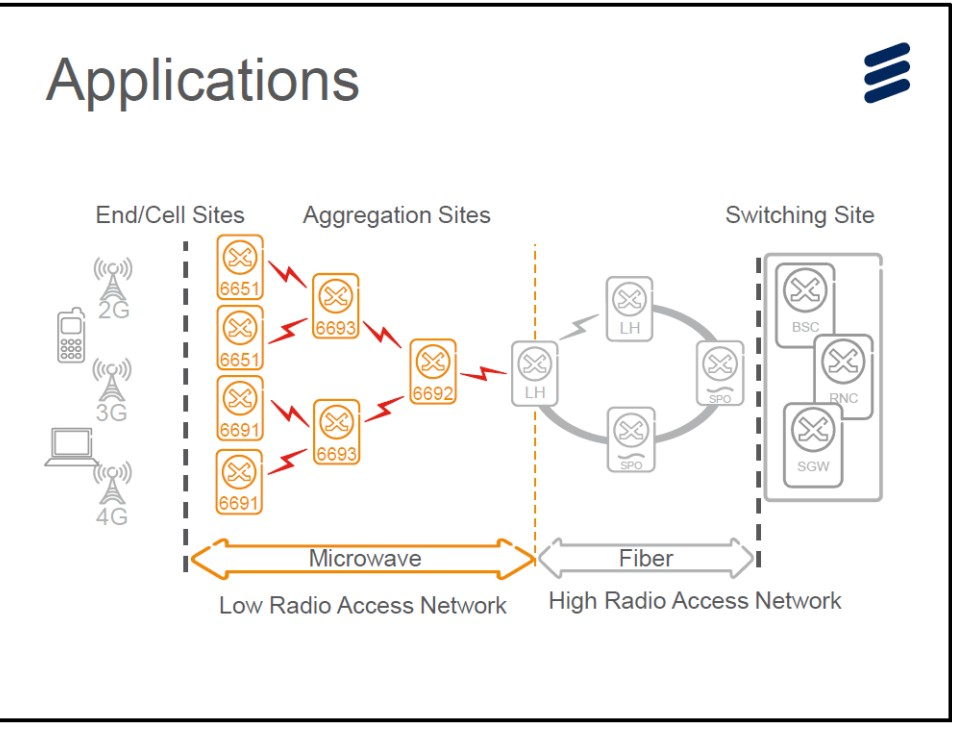

The training labs are based on learning-by-doing, which makes students learn more quickly
and
remember what they have studied by performing practical experiments.
They provide the students
high profession skills and the knowledge on how to improve their chance of employment and
earning capacity.
The manuals and courseware that
accompany each course provide the theory background and
experiments.

Electronics Training Lab
This modular laboratory is aimed for the Electronics profession, but also for technology disciplines
that are also based in electronics, such as: Electricity, Mechanics, Automotive, Robotics,
Automation, Process control.
Autotronics Training Lab
This modular laboratory is aimed for the five stages that comprise the automotive program: Basic
and automotive electronics, Car sub-systems simulators, Car sub-systems demonstrators,
Car diagnostic and troubleshooting methods, Troubleshooting faults in a real car.\

Mechatronics Training Lab
This modular laboratory is aimed for the mechatronics program which includes the following
disciplines: Basic electronics, Pneumatics systems, Hydraulics systems, CNC machines.
Refrigeration and Air-Conditioning Training Lab
The Refrigeration and Air-Conditioning training lab covers actual components and their
interconnection, related functions, operation, diagnosis and repair methods through safe, hands-on
practical activities.
Technology Preparation Training Lab
The Technology Preparation (Tech Prep) laboratory is a classroom-integrated laboratory consisting
of educational modules covering a wide range of subjects such as: Green energy, Computerized
systems, Basic electronics, Basic communication, Mechanical systems.
Science Training Labs
These laboratories (for primary, secondary and high schools) introduce the students to the
computerized sensors world, nature and industry processes and nature laws. It will help them
understand modern technologies such as: home and medical appliances, wearing sensors,
precise agriculture and more.
Robotics Training Labs
The robotics programs (for primary, secondary and high schools) help students to build innovation
and creativity skills. The idea is to make the students understand how systems work, to believe
that they can improve them and be able to realize their ideas.
MultiCenter Training Lab
The MultiCenter offers a variety of selected interactive learning environments, with a large range of
topics and activities such as: Science, Technology, Graphic Design, Digital Music, Robotics,
Computer Technologies and much more for all sectors of society, cultures, different socio�economic groups and different age groups – from very young children to senior citizens.